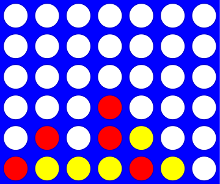

Bestanden en dictionaries#
Data lezen en het meest “tabulaire†datatype!
Klassen#
DIY data, eigen typen!
klasse een zelf gedefineerd datatype
object data of een variabele met als type een bepaalde klasse
methode een functie in een klasse aangeroepen door een object
selfbinnen een klasse, de naam van het object dat een methode aanroeptconstructor de
__init__methode voor het aanmaken van een nieuw objectrepr de
__repr__methode die een string om te printen geeftvelden (of attributen) de data in
self,self.day,self.month,self.year
Waarom klassen?#
Python heeft geen datatype voor Vier op ‘n rij…

En dit probleem kunnen we nu oplossen!
| | | | | | | |
| | | | | | | |
| | | | | | | |
| | | |X| | | |
| |X| |X|O| | |
|X|O|O|O|X|O| |
---------------
0 1 2 3 4 5 6

Hoe kan je de vraagtekens op een gewenste waarde zetten?
b.data[0][1] = "X"
b.data[4][2] = "O"
b.data is een LoL en je kan daar waarden wijzigen. Maar of het resultaat is wat je in gedachten had?

De stenen zweven, dit klopt niet… Hier gelden blijkbaar andere regels, en het object heeft alle kennis van deze regels!
Verantwoordelijkheid#
In het object …
self.data[row][col] = "X"
en wij zouden niet meer moeten weten dan
b.add_move(1, "X")
b.add_move(2, "O")
Werp stenen in de tweede en derde kolom, het object zorgt dat ze op de juiste rij terecht komen (want het kent de regels).
Data ontwerp#
Velden (of attributen): welke data is nodig?
Methoden: welke functionaliteit is nodig?
Dit hoeft niet beperkt te blijven tot een veld van 6 rijen en 7 kolommen!
__init__#
class Board:
"""A datatype representing a C4 board
with an arbitrary number of rows and cols
"""
def __init__(self, width, height):
"""The constructor for objects of type Board
"""
self.width = width
self.height = height
self.data = [[" "] * width for row in range(height)]
List comprehension#
self.data = [[" "] * width for row in range(height)]
width = 7
height = 6
[" "] * width
[' ', ' ', ' ', ' ', ' ', ' ', ' ']
[[" "] * width for row in range(height)]
[[' ', ' ', ' ', ' ', ' ', ' ', ' '],
[' ', ' ', ' ', ' ', ' ', ' ', ' '],
[' ', ' ', ' ', ' ', ' ', ' ', ' '],
[' ', ' ', ' ', ' ', ' ', ' ', ' '],
[' ', ' ', ' ', ' ', ' ', ' ', ' '],
[' ', ' ', ' ', ' ', ' ', ' ', ' ']]
__repr__#
def __repr__(self):
"""This method returns a string representation
for an object of type Board
"""
s = ""
for r in range(self.height):
s += "|"
for c in range(self.width):
s += self.data[r][c] + "|"
s += "\n"
s += (2 * self.width + 1) * "-"
# what kind of loop will add the col #'s here?
return s
| | | | | | | | | | | | | | | |
| | | | | | | | | | | | | | | |
| | | | | | | | | | | | | | | |
| | | | | | | | | | | | | | | |
| | | | | | | | | | | | | | | |
| | | | | | | | | | | | | | | |
--------------- ---------------
0 1 2 3 4 5 6
Welk type lus is nodig om ook de kolomnummers af te drukken (0 tot en met 6 in dit geval)?
add_move#
class Board:
def add_move(self, col, ox):
"""Buggy version!
"""
for row in range(0, self.height):
if self.data[row][col] != " ":
self.data[row - 1][col] = ox
| | | | | | | | | | | | | | | |
| | | | | | | | | | | | | | | |
| | | | | | | | | | | |O| | | |
| | | |X| | | | | | | |O| | | |
| | | |X| | | | | | | |O| | | |
| | | |O| | | | | | | |O| | | |
--------------- ---------------
0 1 2 3 4 5 6 0 1 2 3 4 5 6
Deze versie heeft twee fouten (bugs!), welke?
Drie (!) posities zullen gaan veranderen. De lus zal moeten stoppen als de plek is gevonden, en een oplossing zal moeten worden gevonden voor als de kolom nog leeg is.
class Board:
def add_move_(self, col, ox):
"""Correct version!
"""
for row in range(0, self.height):
if self.data[row][col] != " ":
self.data[row - 1][col] = ox
return # stop the loop, stop the method
# only gets here if column is empty, it sets
# the _bottom_ spot to the correct checker
self.data[self.height - 1][col] = ox
allows_move#

| | |X|O| | |O|
| | |X|X| | |X|
| | |O|O| | |O|
| | |O|X| | |O|
| |X|X|X| |O|X|
|X|O|O|O|X|X|O|
---------------
0 1 2 3 4 5 6
b.allows_move(0) == True
b.allows_move(1) == True
b.allows_move(2) == False
b.allows_move(3) == False
b.allows_move(4) == True
b.allows_move(5) == True
b.allows_move(6) == False
b.allows_move(7) == False
Falseals de kolom out-of-bounds is of gevuldTrueals de kolom in-bounds is en niet gevuld
class Board:
def allows_move(self, col):
"""True if col is in-bounds + open
False otherwise
"""
if ...: # out of bounds?
return False
elif ...: # col full?
return False
else:
return True # allowed!
Aan jou om dit verder uit te werken!
wins_for#

Een bekende oplossing?#
class Board:
def wins_for(self, ox):
"""Does ox win?
"""
for row in range(self.height):
for col in range(self.width):
if ...
if ...
if ...
if ...
De oplossing zal erg veel lijken op wat je eerder met boter, kaas en eieren hebt gebruikt!
constructor
__init__(self, width, height)✔️is toegestaan
allows_move(self, col)✔️plaats een steen
add_move(self, col, ox)✔️verwijder steen
del_move(self, col)❌printen
__repr__(self)✔️is het bord vol
is_full(self)❌heeft een speler gewonnen
wins_for(self, ox)❌het spel …
host_game(self)❌
Waarom objecten en klassen?#
Elegantie: objecten verbergen complexiteit!
if b.wins_for("X") == True:
...
dow = self.diff(d2) % 7
Een algoritmische auteur#

Als dit mijn stijl is, hoe kan een programma nieuwe teksten genereren in dezelfde stijl?
Vragen#
Wat zou een redelijk eerste woord zijn voor een gegenereerde zin?
Wat zou een redelijk volgend woord zijn om de eerste op te volgen?
Wat zou een redelijke test zijn voor het einde van een zin?
Markov modellen#
Technieken voor het modelleren van opeenvolgingen van natuurljke data
Bijvoorbeeld spraak, tektst, sensor data …
Een eerste orde model, elk element is slechts afhankelijk van een enkel voorgaand element
Een eerste-orde Markov proces is een proces waarbij de toestand op tijdstip t+1 (d.w.z. het volgende woord) alleen afhankelijk is van de toestand op tijdstip t (d.w.z. het vorige woord).
Vorige en volgende#
Ik houd van rozen en anjers. Ik dacht, ik koop rozen voor mijn verjaardag.
Als het vorige woord “Ik†was, wat is dan een mogelijk volgend woord?
"Ik" -> ["houd", "dacht", "koop"]
Wat is een datastructuur waar we dit in kunnen opslaan?
Lists#
Lists zijn sequentiële containers
L = [47, 5, 47, 42]
Elementen staan in een vaste volgorde en kunnen worden opgehaald op basis van positie (index)
L[0] == 47
L[1] == 5
Dictionaries#
Dictionaries zijn willekeurige containers
d = {47: 2, 42: 1}
Elementen (of waarden) worden opgehaald met een sleutel op een willekeurige positie
d[47] == 2
d[42] == 1
Goed nieuws, sleutels kunnen ook andere typen dan int zijn!

Een bekende structuur#
woord ⟶ verklaring
naam ⟶ telefoonnummer
afkorting ⟶ betekenis
dier ⟶ jaren Chinese dierenriem

Dictionaries zijn in#
z = {
"rabbit": [1999, 1987, 1975],
"ox": [1997, 1985, 1973],
"dragon": [2000, 1998]
}
De sleutels zijn hier strings en de bijbehorende waarden zijn lists. Dit voorbeeld gaat over de jaren per dier in de Chinese dierenriem, zie het Wikipedia artikel voor alle dieren en jaren!
Is "dragon" een sleutel in z?
"dragon" in z
True
Is 1969 een waarde in z["dragon"]?
1969 in z["dragon"]
False
Woorden tellen#
LoW = ["spam", "spam", "taart", "spam"]
d = {}
for w in LoW:
if w not in d:
d[w] = 1
else:
d[w] += 1
d
{'spam': 3, 'taart': 1}
len?#
Wat zal de lengte van d zijn?
len(d)
2
Twee elementen in dit geval, de sleutels "spam" en "taart".
Bestanden#
Meer data, meer woorden!
f = open("data/a.txt")
text = f.read()
f.close()
print(text)
Ik wil taarten en 42 en spam. Ik krijg toch spam en taarten voor de vakantie? Ik wil 42 taarten!
Alternatief#
Het “lui†openen en sluiten van bestanden
with open("data/a.txt") as f:
text = f.read()
Deze constructie wordt een context manager genoemd en zal je vaak zien in Python code. In dit geval wordt een bestand geopend en binnen een context (een handeling, het lezen van f in dit geval) is het bestand te gebruiken, en daar buiten niet meer (het blok wordt automatische afgesloten met f.close() zodat jij daar niet meer aan hoeft te denken).
print(text)
Ik wil taarten en 42 en spam. Ik krijg toch spam en taarten voor de vakantie? Ik wil 42 taarten!
LoW = text.split()
LoW
['Ik',
'wil',
'taarten',
'en',
'42',
'en',
'spam.',
'Ik',
'krijg',
'toch',
'spam',
'en',
'taarten',
'voor',
'de',
'vakantie?',
'Ik',
'wil',
'42',
'taarten!']
Hulpfunctie#
def get_text(filename):
"""Read from filename
"""
with open(filename) as f:
text = f.read()
return text
Meer woorden tellen!#
def word_count(text):
LoW = text.split()
result = len(LoW)
print(f"There are {result} words")
return result
text = get_text("data/a.txt")
word_count(text)
There are 20 words
20
Unieke woorden#
Wat zijn de unieke woorden in een tekst?
Met andere woorden, wat is de woordenschat (of vocabulair) van een auteur?
def vocab_count(text):
LoW = text.split()
d = {}
for w in LoW:
if w not in d:
d[w] = 1
else:
d[w] += 1
print(f"There are {len(d)} DISTINCT words") # expressions in f-strings!
return d # return d for later use - by other code...
vocab_count(text)
There are 13 DISTINCT words
{'Ik': 3,
'wil': 2,
'taarten': 2,
'en': 3,
'42': 2,
'spam.': 1,
'krijg': 1,
'toch': 1,
'spam': 1,
'voor': 1,
'de': 1,
'vakantie?': 1,
'taarten!': 1}
%run assets/markov.py
d = create_dictionary(text)
d
{'$': ['Ik', 'Ik', 'Ik'],
'Ik': ['wil', 'krijg', 'wil'],
'wil': ['taarten', '42'],
'taarten': ['en', 'voor'],
'en': ['42', 'spam.', 'taarten'],
'42': ['en', 'taarten!'],
'krijg': ['toch'],
'toch': ['spam'],
'spam': ['en'],
'voor': ['de'],
'de': ['vakantie?']}
generate_text(d, 42)
'Ik wil 42 en 42 en taarten en spam. Ik krijg toch spam en spam. Ik wil 42 taarten! Ik wil taarten voor de vakantie? Ik krijg toch spam en 42 taarten! Ik wil 42 taarten! Ik wil taarten en 42 taarten! '
Model genereren#
d = {}
pw = "$"
for nw in LoW:
if pw not in d:
d[pw] = ...
else:
d[pw] += ...
pw = ...
begin met het vorige woord
pwals"$"voor elk volgend woord in de lijst van woorden voeg het toe aan …
maak
pwgelijk aannwbehalve als
nw[-1]punctuatie is, maakpwdan gelijk aan …
Tekst genereren#
begin met
pwals de"$"stringkies random een
nwdat volgt oppwen voeg het toe aan …maak
pwgelijk aannwbehalve als
nw[-1]punctuatie is, maak danpwgelijk aan …